The Gaps of Birth Weight
03.2016 _ 04.2016 / boston
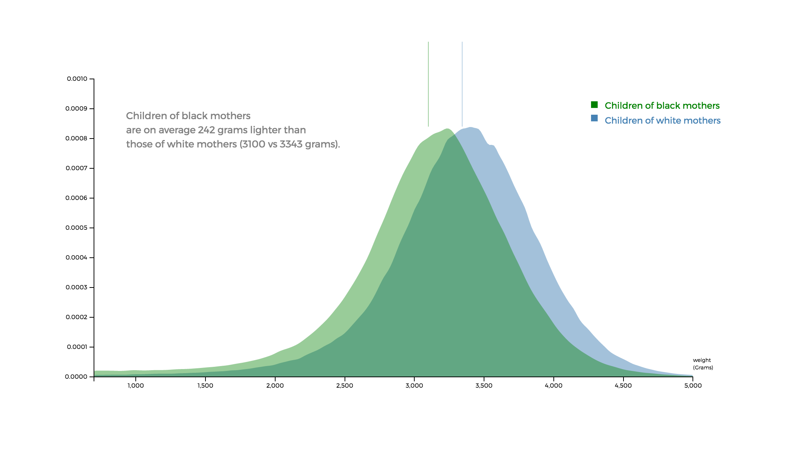
What are the factors that could potentially influence the birthweight of newborns?
This project presented some perspectives on this issue through a scrolling telling data visualization. (Click here to see the interactive visualization)
Collaborated with Maciej Kos (Ph.D candidate of Personal Health Informatics Department at Northeastern University), we drew insights from the data provided by Centers for Disease Control and Prevention.
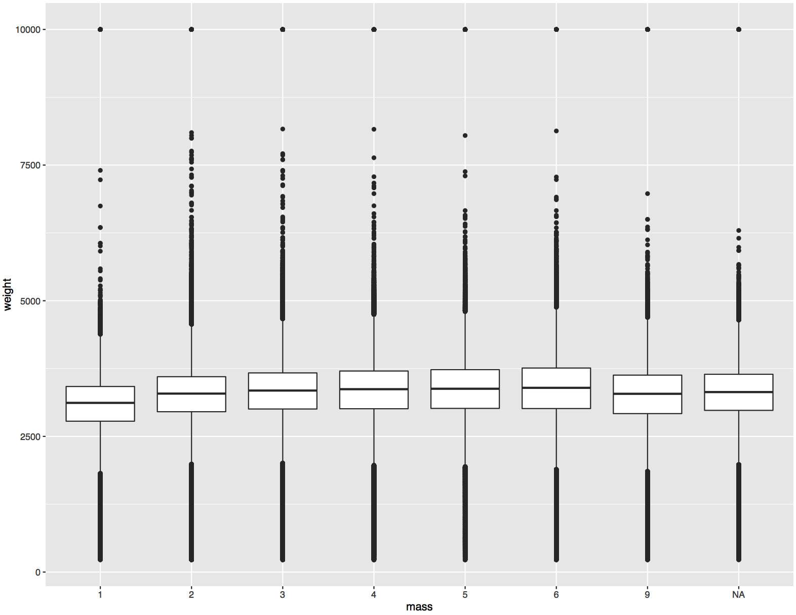
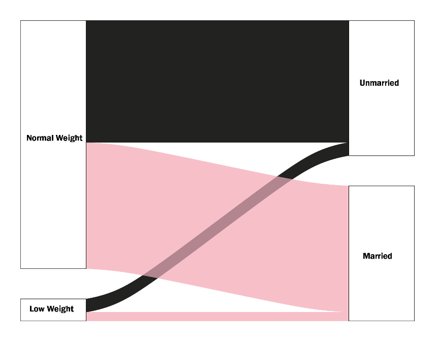
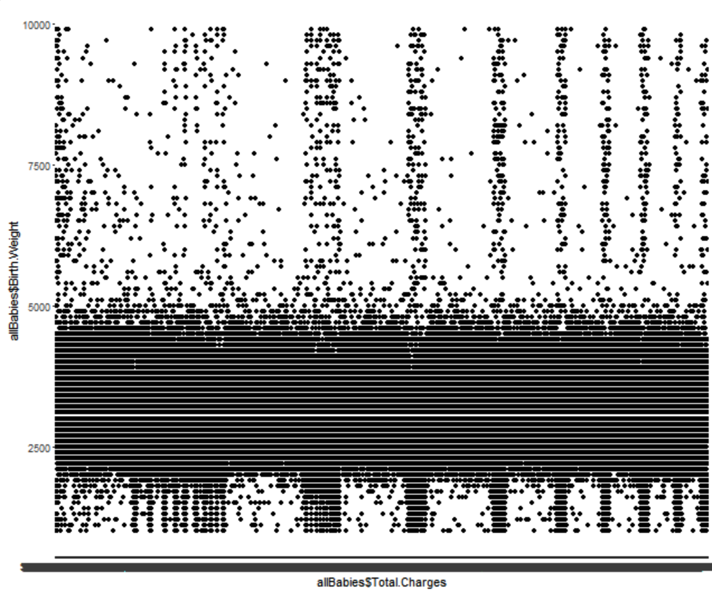
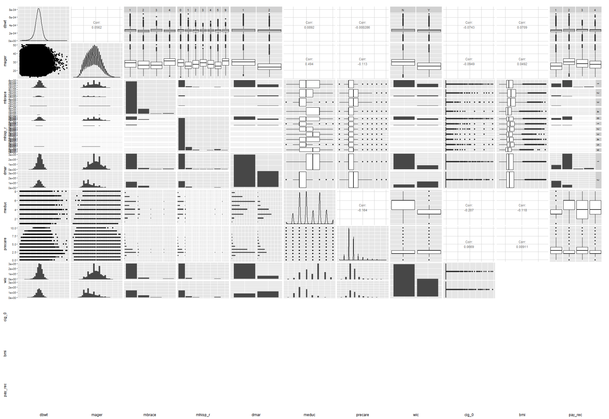
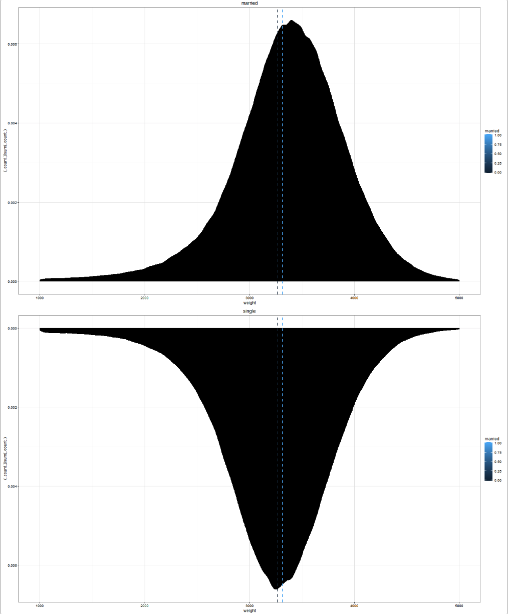
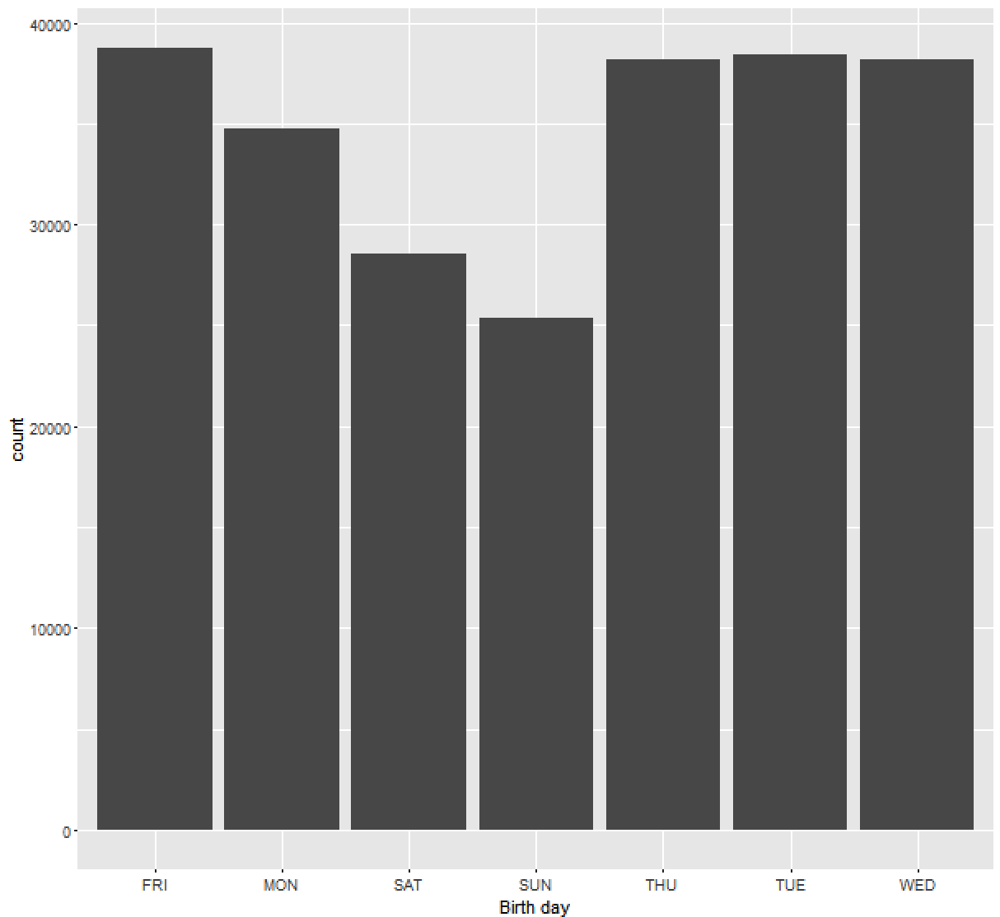
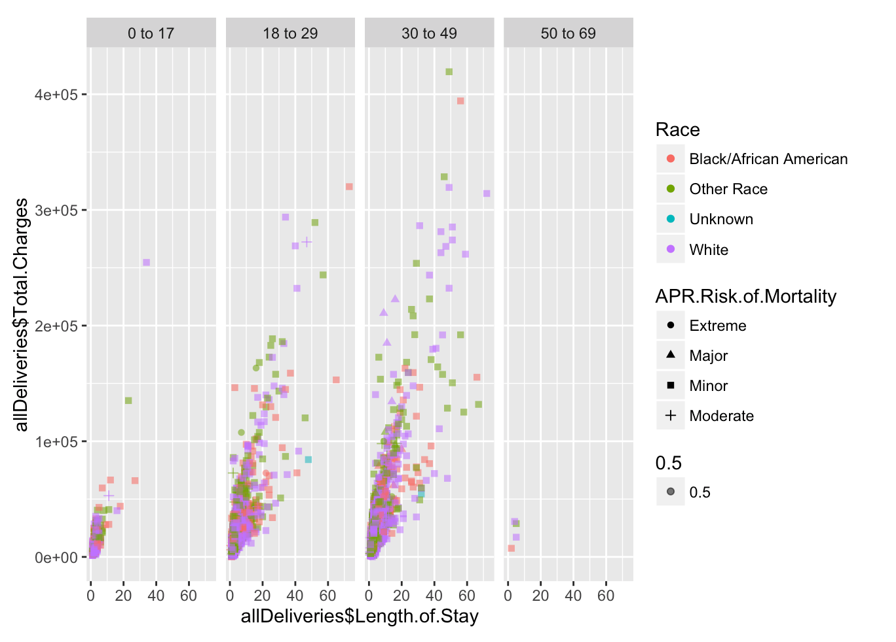
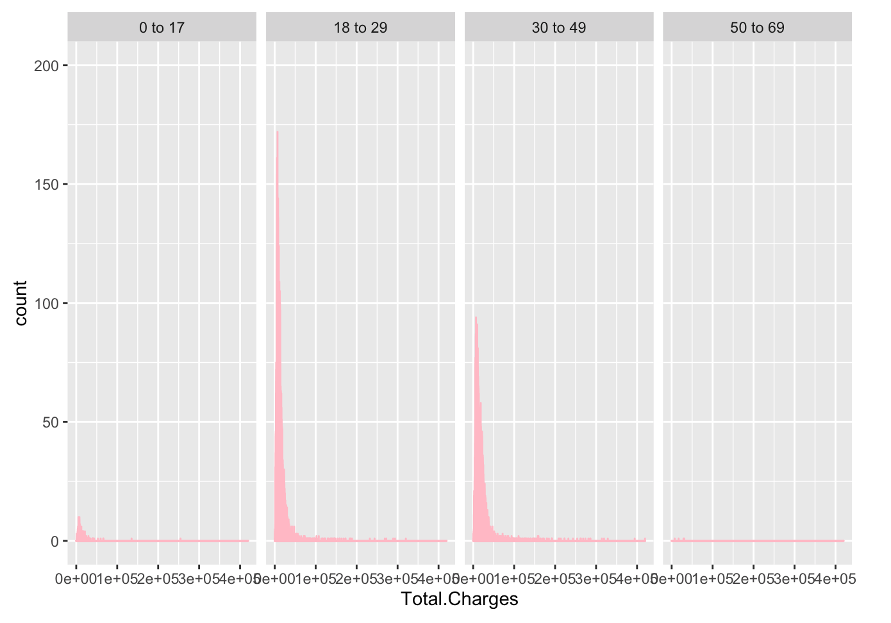
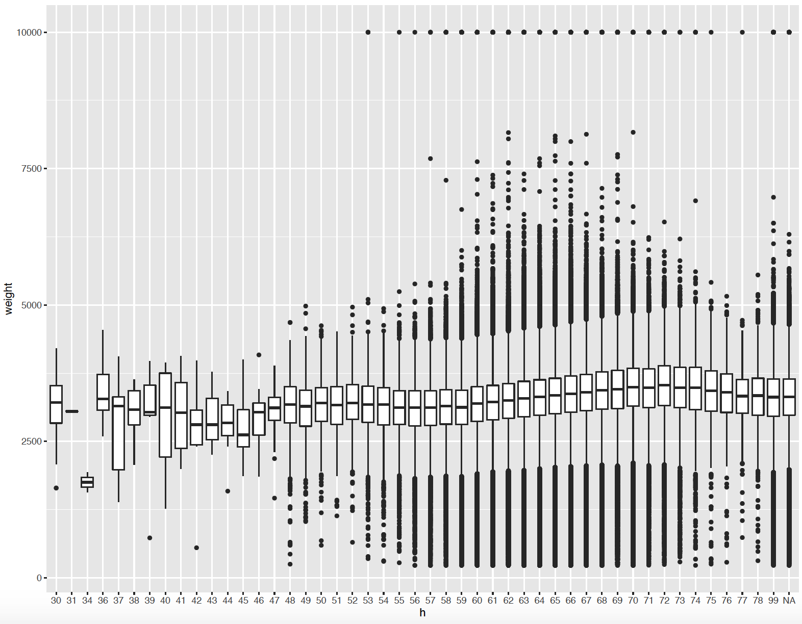
By analyzing over 2 million records of births given in U.S in 2014, we identified some correlation between low birthweight and social factors such as racial difference, income, age, marital status, and etc.
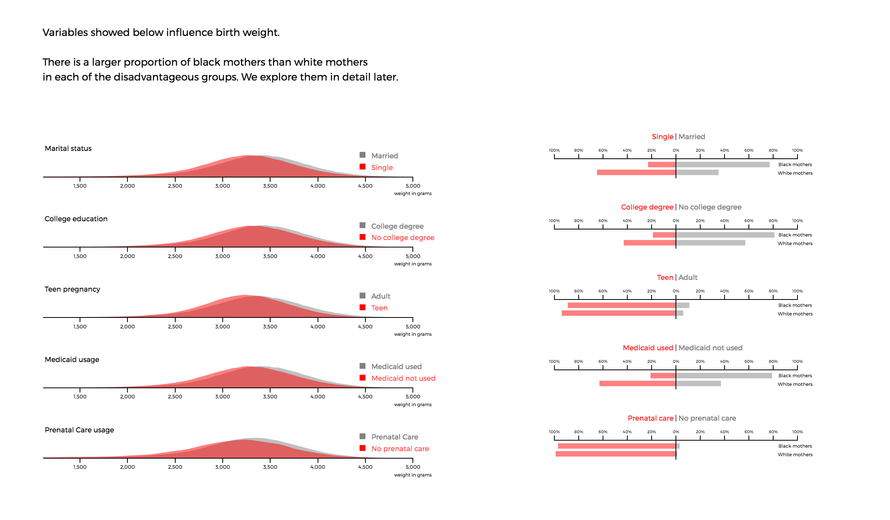
_ development tools:
R, D3.js, Jquery, Scroll.js, Tweenmax
_ thanks and credits to:
[Maciej Kos] for the team work